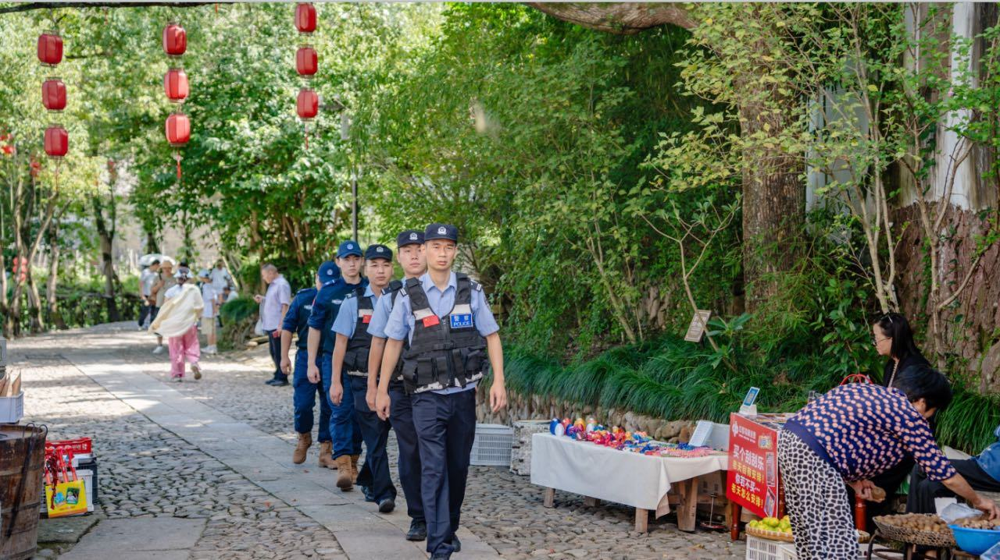
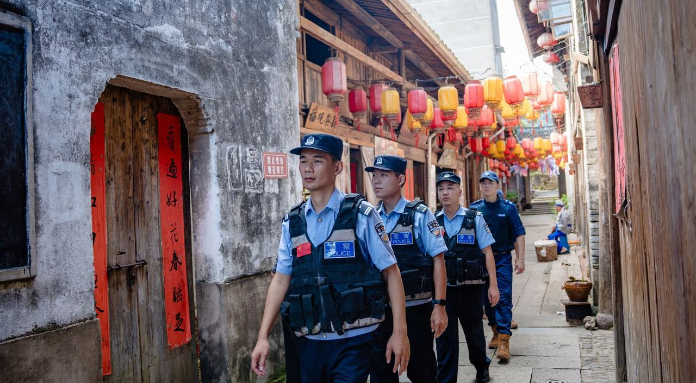

标题照片由用户提供；正文为缙云公安供图、平安浙江网发布的景区巡逻资料照片。
十月的景区、商圈与步行街，既有结伴出游的家庭，也有停留拍照、排队购物和等候散场的人群。巡防的重点，是在热闹中看清变化：哪里开始走不动，谁正需要帮助，什么问题需要尽早报告。节日里的观察方法，同样适用于周末夜市与日常大型活动。
到岗后先确认当天开放区域、活动时段、出入口安排和现场联络人。注意临时围挡、摊位、排队设施是否改变了原有通行路线；熟悉服务点、医疗点及救援车辆的通行位置，避免群众求助时只知道大致方向。
沿巡逻路线重点观察出入口、狭窄街巷、坡道台阶和人车交汇处。看人流是否连续通过，排队是否延伸到路口，停留拍照是否挤占通道。发现消防通道、安全出口受阻，及时反馈现场责任方并跟进处理。

判断现场秩序，不能只凭“人很多”的印象。持续观察队伍有没有停滞、逆向穿行有没有增多、入口与出口的人流是否交织，以及有人驻足后是否带动后方聚集。把这些可描述的变化及时报告，便于指挥人员判断是否需要增援和调整安排。
按照现场指挥和既定方案，协同管理人员做好指路、排队提示和通行秩序维护。需要分流或调整出入口时，应先确认接续路线和接应人员，避免将人群引向更窄的通道或车辆通行区域。不要自行移动隔离设施、临时改变人流方向。
遇到人群推挤、人员倒地等紧急情况，立即报告准确位置和现场变化，请求支援及必要的医疗力量，按应急预案与统一指挥开展处置。提示语尽量简短、清楚，避免相互矛盾的指令。
人员走失：区分“家属找不到同行人”和“发现无人陪同的老人儿童”。了解最后见面地点、时间、衣着特征及联系方式，及时通过勤务联络渠道衔接景区服务点和相关力量。妥善照看求助人员，核实接领关系后再办理交接；不在无关群聊传播照片、电话和身份信息。
身体不适：先关注周围是否有持续危险，呼叫医疗力量并说明具体位置、可见症状和通行条件，维护救助空间，引导救援人员到场。依照受训内容及急救调度指导提供力所能及的帮助，不擅自判断病因或让患者服药。
物品遗失：问清遗失物品、可能位置和时间，按程序衔接失物招领或接报警渠道。对拾得物品做好登记和交接，核实认领信息；存在被盗等线索时及时转入相应处理流程，不以“自行寻找”简单结束求助。
排队插队、无意碰撞、停车和消费争执，容易在等待与拥挤中升级。到场先观察是否有人受伤、是否出现肢体冲突，以及围观是否挡住通道。在确保安全的前提下平和沟通，提醒无关人员保持通行空间。
听清双方诉求，区分一般争执、消费投诉与涉嫌违法犯罪的情况，按岗位职责和程序分别衔接。涉及价格、退款等专业事项时联系对应主管部门或服务渠道，不随口承诺处理结果；发现冲突升级或超出本岗位处置能力，及时报告并请求支援。

报告时尽量说清地点、现象、人员、已采取措施和需要的支援。用可定位的入口名称、店铺门牌或明显地标描述位置；人数无法确定时说明估计或待核实，不把推测当成事实。
报告表达练习（虚构情境）：“某景区东门内侧售票口附近，排队队伍已延伸至步道交叉口，进出游客相互交织。目前未发现人员受伤，已联系现场工作人员维护通行，请求核实客流并安排协同疏导。”
勤务结束前，交接反复拥堵的位置、尚未解决的设施隐患、已联络的责任人员及待跟进的求助事项。把发现的问题留下记录，下一班才能接着做。
本期记住四件事：看清通道变化，回应群众求助，及时报告异常，交接未完事项。具体勤务与处置执行本单位要求及现场指挥。